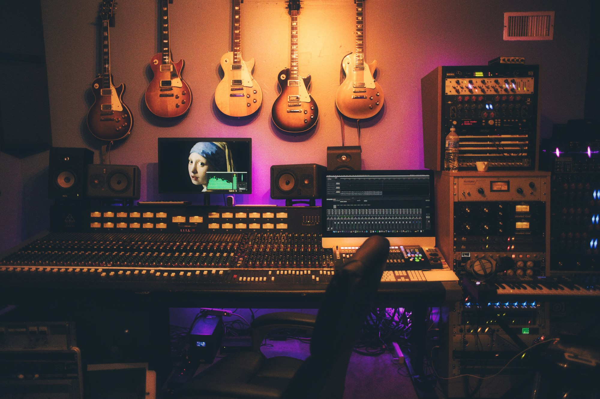
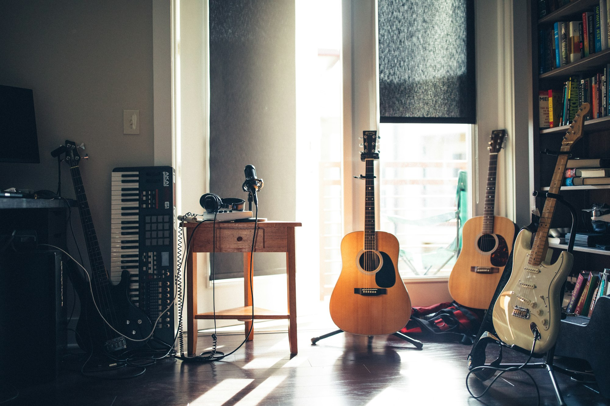

Setting up in the live room
A few things made at Alcove, from rough ideas to finished songs.
From rough bedroom voice memos to finished songs, recorded and mixed right here.
Flip the switch and hear what happens when a phone recording becomes a finished song.
| Voice Memo | Finished Master | |
|---|---|---|
| Mic | Phone mic | Studio mics |
| Room | Bedroom, some room noise | Live room |
| Takes | One take | Layered takes and harmonies |
| Mix | None | Mixed and finished |
A quick peek at the room and the vibe.
What a session looks and feels like.

Setting up in the live room

Getting comfortable before the first take

Trying out different sounds
Listening back together
Layering parts, one at a time
Putting the finishing touches on a mix
Send me your rough demo or voice memo. No pressure at all.